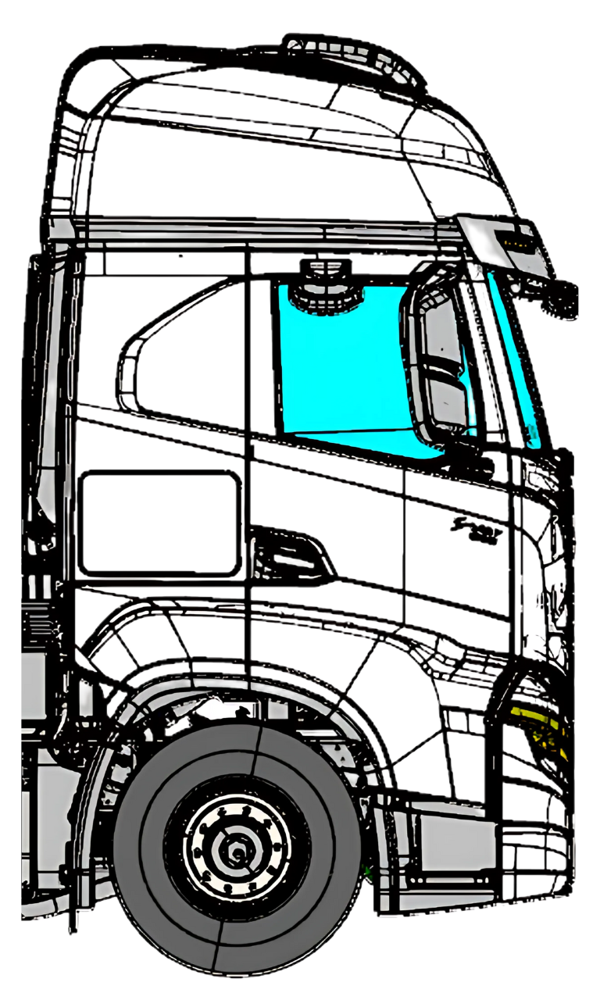

<div class="content">
  <ion-label class="title">Selecione, se houver, pontos de infiltração nos vãos da lateral direita.</ion-label>
  <div class="test">
    <div class="image-container">
      
      <ion-button [class.selected]="selected12" class="rounded" style="top: 23%; left: 37%;"
        (click)="select(0)">12</ion-button>
      <ion-button [class.selected]="selected13" class="rounded" style="top: 26%; left: 49%;"
        (click)="select(1)">13</ion-button>
      <ion-button [class.selected]="selected14" class="rounded" style="top: 30%; left: 72%;"
        (click)="select(2)">14</ion-button>
      <ion-button [class.selected]="selected15" class="rounded" style="top: 41%; left: 49%;"
        (click)="select(3)">15</ion-button>
      <ion-button [class.selected]="selected16" class="rounded" style="top: 46%; left: 77%;"
        (click)="select(4)">16</ion-button>
      <ion-button [class.selected]="selected17" class="rounded" style="top: 49%; left: 20%;"
        (click)="select(5)">17</ion-button>
    </div>
  </div>
    <ion-button id="finish-upside-test-button" (click)="finishTest()">Confirmar</ion-button>
</div>
